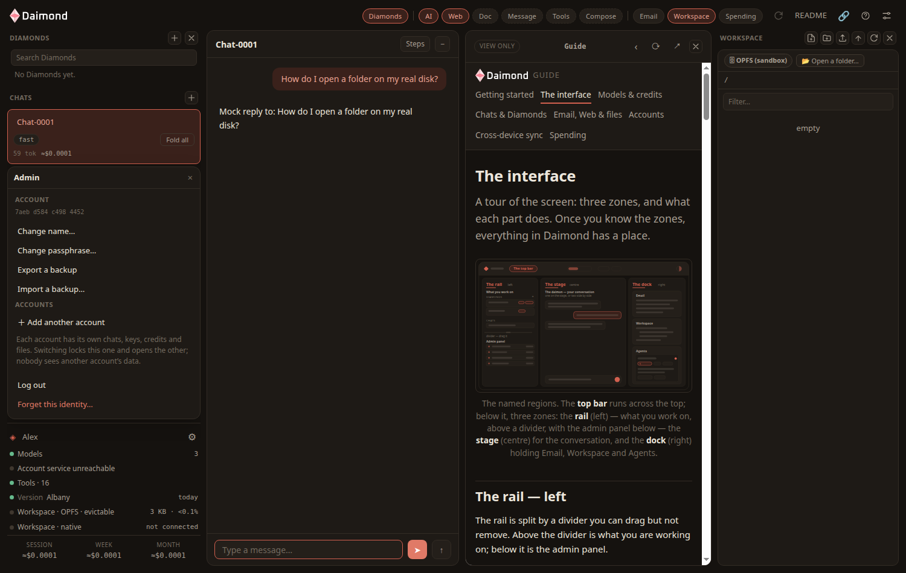

アカウント & プライバシー
Daimond のアカウントは、この端末に置かれたパスフレーズです。サーバー上にアカウントはありません。あなたの識別情報も、鍵も、ファイルも、このブラウザの中だけにあります。このページでは、パスフレーズ、ブラウザを他の人と共有する場合、そして何が外に出ないのかを説明します。
アカウントとはパスフレーズのことです
初回起動時、Daimond は この端末を保護することを申し出ます。名前とパスフレーズを決めると、そのパスフレーズがそのままアカウントになります。役割は二つあります。保存したプロバイダーの鍵とメールの資格情報を暗号化して、のぞき見た人に読めないようにすること。そして、クレジットを使うときにあなたを示す識別情報になることです。これに関する情報がブラウザの外に出ることはありません。
パスキーでもっと速くロックを解除する
パスフレーズがアプリを守っている状態になれば、 パスキー を追加して、もっと速くロックを解除できます。顔でも、指紋でも、セキュリティキーでもよく、端末がすでに備えているパスワードなしのサインインと同じものです。パスキーはパスフレーズの代わりではなく、あなたに代わってその封を解きます。ですからパスフレーズが根のままで、いつでも使える控えでもあります。パスキーをなくしても、パスフレーズが手元にあるかぎり失うものはありません。これらがサーバーに届くことはありません。解除は端末で行われ、クレジットのサービスが見るのは公開鍵だけです。
アカウントの操作
あなたの識別情報は、左下にある管理パネルの上部にあります。管理パネルのホームに、そのための操作が並んでいます。

- 名前を変更…：識別情報の名前を変えます。
- パスフレーズを変更…：新しいものを決めます。暗号化されたデータは、それで包み直されます。
- パスキーを追加…：顔、指紋、セキュリティキーで、もっと速くロックを解除します。
- バックアップを書き出す：チャット、Diamonds、作業領域のファイル、そしてアカウントの鍵を、手元に置くファイルへ書き出します。鍵は、このブラウザが持っているそのままの形で包まれて入るので、ファイルはブラウザより弱くはならず、あなたのパスフレーズ以外では開きません。
- バックアップを読み込む…：そのファイルをここに戻します。このブラウザが自分のアカウントを持っていなければ、バックアップのアカウントを引き受け、そのアカウントのパスフレーズで開きます。すでにアカウントがここにあるなら、バックアップのアカウントはそのままにして、戻るのは仕事だけです。
- ログアウト：アプリをロックします。データは暗号化されたまま端末に残り、もう一度パスフレーズを入力するまで開きません。
- この識別情報を消す…：識別情報とその暗号化データを、このブラウザから完全に取り除きます。
その横に、もう二つの行があります。 同期 は、この端末の同期を入り切りします。止めるのはすぐで、失われるものはありません。 診断 は、アプリ自身の足跡を見せて、コピーします。出来事の名前と時刻だけで、鍵も、メッセージの本文も、ファイルの中身も含みません。不具合の報告に貼り付けるのはこれです。
ひとつのブラウザを複数の人で使う
ひとつのブラウザは、いくつものアカウントを持てます。チャットも、鍵も、クレジットも、ファイルも、それぞれのものです。ほかのアカウントのデータが見えることはありません。
- 席を離れるとき。 ログアウト を選んでアプリをロックします。チャットも鍵もファイルも端末に残りますが、パスフレーズなしには読めません。
- 戻ってきたとき。 パスフレーズを入力して解除します。読み込み直すたびにアプリはまたロックされます。強制再読み込みも、ブラウザの再起動も同じです。そこから導かれる鍵はメモリにあるだけで、ディスクに書かれないからです。あなたのものは何も失われず、入力するまで何も開きません。パスキーや、パスフレーズを持っているパスワード管理ソフトが、代わりに入れてくれます。
- ほかの人の番。 ＋ 別のアカウントを追加 を管理パネルで選ぶと二つ目ができ、その上の行で二つを切り替えます。切り替えるときは、まずいまのアカウントをロックし — 鍵は忘れられます — それから別のほうを開きます。
- ブラウザをそのまま譲るとき。 この識別情報を消す… で、このブラウザからあなたのアカウントを消します。
アカウントを端末のあいだで移す
あなたのアカウントは、このブラウザに置かれた署名の鍵です。パスフレーズはそれを作り直すのではなく、ここにすでに保存されている写しを復号するだけです。ですから、まっさらなブラウザで同じパスフレーズを使っても、始まるのは 別の アカウントで、クレジットもそれ自身のもの、Pro もありません。鍵そのものが渡っていく必要があり、それを運べるものは三つあります。 ほかの端末をリンク。新しいブラウザに入力するペアリングコードが出ます。二つめはパスキーで、ひと動作で新しい端末を立ち上げます。三つめは バックアップを書き出すで、そのファイルは鍵を包んだまま抱えています。それを バックアップを読み込む… で読み込めば、まだアカウントを持たないブラウザがその鍵を引き受けます。ブラウザを外す 前に どれか一つを済ませてください。保存領域が消え、バックアップも取っていなければ、鍵も一緒に消えます。クレジットも、Pro のライセンスも一緒で、ほかに開ける手立てはありません。
外に出ないもの
あなたのパスフレーズ、プロバイダーの鍵、メールの資格情報、チャット、Diamonds、ファイルは、このブラウザの中にあり、こちらには送られません。ゲートウェイでこちらが持っているのはお金と暗号文です。クレジットの残高とライセンス、そして端末間の同期のために、こちらでは開けない暗号化された荷物がひとつ。鍵を持っていないので、あなたの作業を読むことはできません。
データがどこへ行くのかは、正確に言うだけの値打ちがあります。メッセージは、ご自分の鍵ならモデルプロバイダーへ直接、クレジットを使うならこちらの計測付きのサービスを通って届きます。ページの取得と、メールの同期や送信はゲートウェイを通り、同期はあなた自身の端末のあいだで暗号化された荷物を運びます。ですから正直な言い方は「何も出ていかない」ではありません。ご自分の鍵なら、チャットもファイルも平文で出ていくことはなく、こちらのサーバーへ出ていくのが暗号文だけであることを、あなたが見て確かめられる、ということです。
この守りには、正直な限界があります。パスフレーズが防ぐのは、その場での軽いのぞき見と、共有した端末での詮索です。ブラウザの開発者ツールを開いた人が見つけるのは暗号化されたデータで、あなたの鍵ではありません。乗っ取られたブラウザ、悪意のある拡張機能、キーロガーには効きません。どれもブラウザの中の仕組みを丸ごと破るものなので、端末そのものを信頼できる状態に保ってください。そして、離れたサーバーが内側で何をしているかは、外からは証明できません。だからこそ、あなたが確かめられる側であるクライアントを開いています。